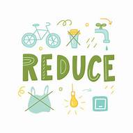

Cultivating a Sustainable Future: Overcoming Barriers to Zero Waste
Individuals today face numerous challenges in adopting a zero waste lifestyle, including the
prevalence
of single-use plastics, lack of infrastructure for recycling and composting, and the overall
convenience
of a disposable culture. Overcoming these obstacles requires a multifaceted approach that
encompasses
education, policy changes
7 R's of Zero Waste Lifestyle
Refuse
The first step on your zero waste journey is to refuse. Say no to
single-use
plastics,
disposable items, and unnecessary packaging.

Reduce
Embrace minimalism: Less is more. By reducing possessions, we free
ourselves from clutter and contribute to a sustainable lifestyle.
Reuse
Reusing items is practical and fun! It reduces waste, saves money, and
sparks creativity.
Recycle
Recycling isn't the ultimate solution, but it matters. Know local rules,
educate yourself, and avoid contaminating bins by rinsing containers.
Rot
Composting transforms organic waste into nutrient-rich soil. Collect food
scraps (fruit peels, coffee grounds, veggie scraps), add yard waste (grass clippings, leaves,
branches), and create a compost bin.
Rethink
Rethink your choices: Reflect on consumer habits aligned with values. Opt
for bulk shopping to reduce packaging waste. DIY cleaning products with vinegar and baking soda.

Respond
Design your sustainability report with specific topics in mind, such as
carbon reduction or human rights. Provide quantifiable metrics—like carbon intensity reduction
and renewable energy usage—to demonstrate progress.
Promoting a Zero Waste Mindset
I emphasize sustainable development—a harmonious balance between environmental
preservation, economic growth, and social equity. Let's nurture responsible citizens who
safeguard our planet for future generations.
Dr. Manoj Kumar
Principal of
Marwari College Ranchi
I emphasize sustainable development—a holistic approach that balances environmental
conservation, economic growth, and social equity. Let's collaborate to create a
resilient future for our community and planet.
Dr. R.R. Sharma
Placement head of
Marwari College Ranchi
I urge everyone to save nature. Let's plant trees, reduce waste, and protect
biodiversity. Our collective efforts today ensure a greener, healthier planet for
generations to come.
Anubhav Chakraborty
Assistant Co-ordinator of placement cell
Marwari College Ranchi
I emphasize the urgency of saving nature. Let's sow the seeds of change, protect
biodiversity, and adopt sustainable practices. By using eco-friendly products and
reducing plastic waste, we contribute to a healthier planet for all.
Dr. Raju Manjhi
Asst. Professor
Marwari College Ranchi
I emphasize the importance of reuse. It involves putting items to use again, reducing
waste, and promoting sustainability. Let's harness creativity and find new purposes for
existing resources.
Dr. Kunal Gupta
Asst. Professor
Marwari College Ranchi
I emphasize the vital role of nature in our lives. It nurtures all life, provides fresh
air, stimulates our senses, and offers solace. Let's cherish and protect our natural
world for a healthier, harmonious existence.
Dr. Anjana Kumari
Asst. Professor
Marwari College Ranchi
Zero waste is about responsible production, consumption, and resource recovery. By
refusing unnecessary items, reducing waste, reusing, recycling, and composting, we
contribute to a healthier planet.
Dr. Archana Kumari
Asst. Professor
Marwari College Ranchi

I encourage everyone to join hands and start saving nature together. Let's advocate for
urgent climate action, inspire positive changes, and foster a sense of
interconnectedness with our planet. Remember, collective efforts lead to lasting impact
Meera Sahu
Asst. Professor
Marwari College Ranchi
I emphasize sustainable development—a harmonious balance between environmental
preservation, economic growth, and social equity. Let's nurture responsible citizens who
safeguard our planet for future generations.
Dr. Manoj Kumar
Principal of
Marwari College Ranchi
I emphasize sustainable development—a holistic approach that balances environmental
conservation, economic growth, and social equity. Let's collaborate to create a
resilient future for our community and planet.
Dr. R.R. Sharma
Placement head of
Marwari College Ranchi
I urge everyone to save nature. Let's plant trees, reduce waste, and protect
biodiversity. Our collective efforts today ensure a greener, healthier planet for
generations to come.
Anubhav Chakraborty
Asst. Co-ordinator of placement cell
Marwari College Ranchi
I emphasize the urgency of saving nature. Let's sow the seeds of change, protect
biodiversity, and adopt sustainable practices. By using eco-friendly products and
reducing plastic waste, we contribute to a healthier planet for all.
Dr. Raju Manjhi
Asst. Professor
Marwari College Ranchi
I emphasize the importance of reuse. It involves putting items to use again, reducing
waste, and promoting sustainability. Let's harness creativity and find new purposes for
existing resources.
Dr. Kunal Gupta
Asst. Professor
Marwari College Ranchi
I emphasize the vital role of nature in our lives. It nurtures all life, provides fresh
air, stimulates our senses, and offers solace. Let's cherish and protect our natural
world for a healthier, harmonious existence.
Dr. Anjana Kumari
Asst. Professor
Marwari College Ranchi
Zero waste is about responsible production, consumption, and resource recovery. By
refusing unnecessary items, reducing waste, reusing, recycling, and composting, we
contribute to a healthier planet.
Dr. Archana Kumari
Asst. Professor
Marwari College Ranchi
I encourage everyone to join hands and start saving nature together. Let's advocate for
urgent climate action, inspire positive changes, and foster a sense of
interconnectedness with our planet. Remember, collective efforts lead to lasting impact
Meera Sahu
Asst. Professor
Marwari College Ranchi
❮
❯
Sustainable Solutions for a Zero Waste Future
The Path to Zero Waste: Challenges, Solutions, and the Role of Community
Explore the path to zero waste with insights into challenges, sustainable solutions, and the pivotal
role of community collaboration. Discover practical strategies to reduce waste and empower
collective action for a greener future. Join us in creating a cleaner, more sustainable world
together.
Cultivating a Zero Waste Mindset: Practical Strategies and Inspiring Stories of Individuals Who
Have Embraced a Sustainable Lifestyle
Cultivate a zero waste mindset with our practical strategies and inspiring stories from individuals
who've embraced sustainable living. Discover how small changes in daily routines—like reducing
single-use plastics and embracing composting—can make a big impact. Be inspired by real-life
examples of people integrating eco-conscious choices into their lives, contributing to a healthier
planet. Whether you're new to the concept or looking to deepen your commitment, our resources and
community support will empower you on your journey towards a more sustainable future. Join us in
transforming aspirations into actions for a cleaner, greener world.